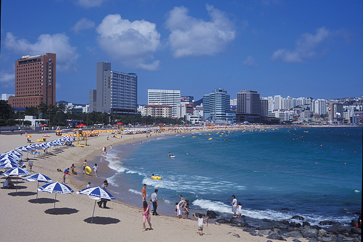
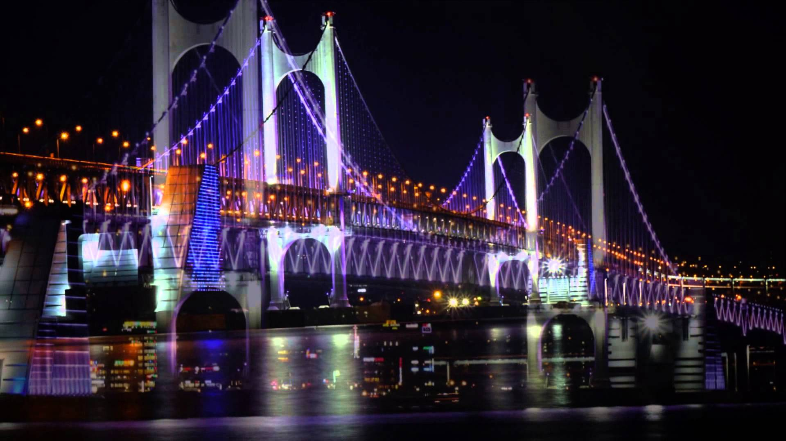
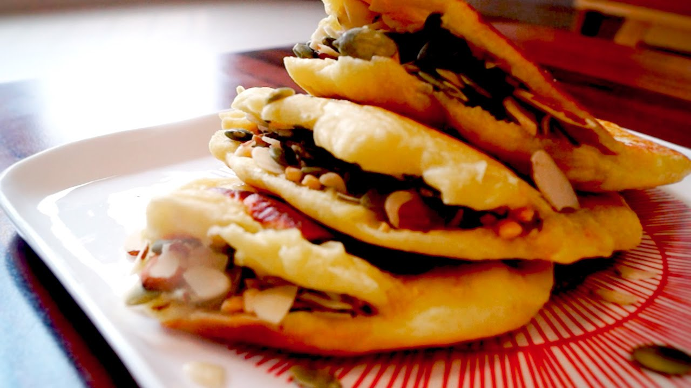
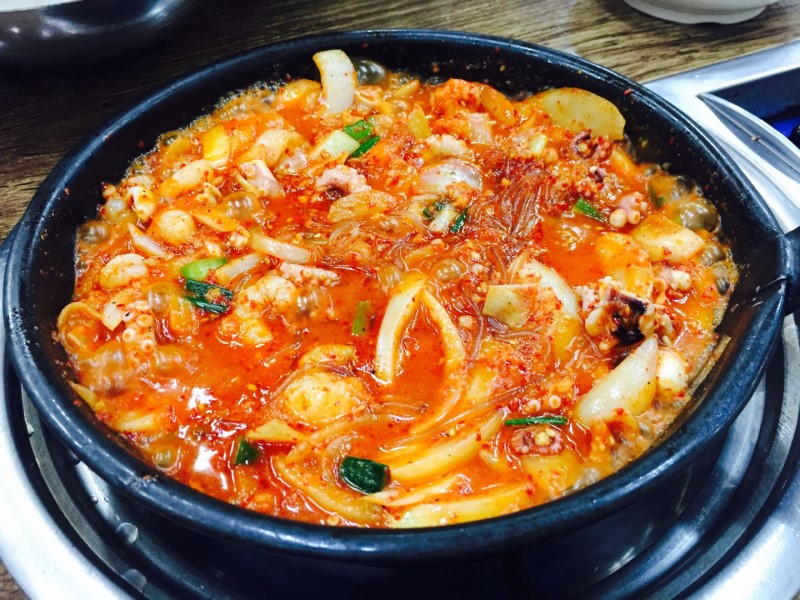

관광지
1. 해운대

백사장 길이가 1.5km, 폭 40~80m, 면적 87,600㎡로 수심이 얕고 조수의 변화가 심하지 않으며 주변에 오락시설과 부대시설이 많아 해마다 천만명이 넘는
피서객이 찾아오고 있다. 또한 매년 해수욕장 개장과 어울러 각종행사와 축제가 개최되어 해운대를 찾는 관광객들에게 풍성한 볼거리를 제공하고 있다.
해수욕장 입구에 들어서 있는 부산아쿠아리움을 비롯해 해변작은도서관이 있으며 해맞이축제, 달맞이온천축제,바다축제 등 연중 다양한 볼거리와 즐길거리가 있다.
특히 해운대해수욕장 해변을 끼고 자리잡은 특1급 호텔들은 부산국제영화제, 2005 APEC 정상회의 등 국제 행사 경험이 풍부해 해운대 해수욕장을 세계적인 해수욕장으로 만드는데 일조를 한다.
해운대 해수욕장의 백사장 모래는 까칠까칠하고 깨끗하여 몸에 묻으면 잘 떨어지는 특징이 있으며, 이 모래는 춘천천 하천강변으로부터 유입된
모래와 조개껍질이 오랜세월의 풍화작용을 거쳐 다듬어진 양질의 모래이다.
한편, 해운대 해수욕장 경관조명 공사가 2005년완공되어 제10회 바다축제 개막에 맞춰 점등식과 함께 불을 밝혔다.
경관조명은 웨스턴조선호텔에서 한국콘도앞에 이르는 길이(1.6Km)의 해운대해수욕장 전 구간과 달맞이 길 일대에 설치됐으며, 연중 매일 일몰 후부터
자정까지, 피서철에는 새벽2시까지 가동된다.
해운대해수욕장의 경관조명은 광장과 보행로, 주변 수목 등에 다양하게 조성되어 해변의 낭만과 아름다운 자연경관, 신비로운 조명이 어우러진 멋진 바다 분위기를 연출한다
2. 광안대교

부산광역시의 항로 및 산업 물동량의 원활한 우회 수송을 통해 수영로·중앙로 등 도심 간선도로의 교통난을 완화하고,
해상 관광 시설의 역할을 제고할 목적으로 1994년 8월에 착공해 2003년 1월 6일 완전 개통하였다. 광안대로라고도 한다.
총길이는 7,420m로, 이 가운데 중앙 900m는 현수교이며, 접속교량은 6,520m이다. 2층 복층 구조의 왕복
8차로로 너비는 18∼25m이며, 사업은 부산광역시 건설본부가 맡았다. 부산광역시 수영구 남천동 49호 광장과 해운대구
우동 센텀시티 구간을 연결하는 다리로, 총 공사비는 7899억 원이 들었다.
국내에서 가장 긴 교량으로, 서해대교보다 110m가 더 길고, 시간대별, 요일별, 계절별로 구분해 10만 가지 이상의
다양한 색상을 낼 수 있는 경관 조명시설을 갖추었다. 국내 최초의 2층 해상 교량으로, 현수교 역시 국내 최대 규모이다. 또 국내
최대 규모의 3경간 연속 2층 트러스교를 현수교 양측에 360m씩 건설함으로써 광안해수욕장의 야경과 함께 부산광역시의 명소로 자리잡았다.
먹거리
1. 씨앗 호떡

2. 돼지국밥
3. 낙곱새
